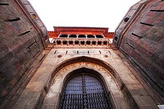
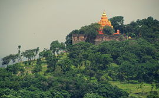
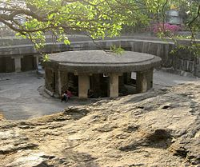

POPULAR DESTIATIONS
-
Shaniwar Wada
(wiki) The Shaniwarwada was normally the seven-storey capital building of the Peshwas of the Maratha Empire. It was supposed to be made entirely of stone but after the completion of the base floor or the first storey, the people of Satara (the national capital) complained to the Shahu(King) saying that a stone monument can be sanctioned and built only by the Shahu(King) himself and not the Peshwas. Even today if you visit and see the walls carefully, they are partly made of stone and partly by bricks. The Wada was then completed and upon being attacked by the British Artillery 90 years later, all the top six stories collapsed leaving only the stone base, which was immune to the British artillery.
By 1758, at least a thousand people lived in the fort. In 1773, Narayanrao, who was the fifth and ruling Peshwa then, was murdered by guards on orders of his uncle Raghunathrao and aunt Anandibai. A popular legend has it that Narayanrao's ghost still calls for help on full moon nights. Various people, working around the area, have allegedly reported the cries of "Kaka mala vachava"(Uncle, save me) by Narayanrao Peshwa after his death. In June 1818, the Peshwa, Bajirao II, abdicated his Gaadi (throne) to Sir John Malcolm of the British East India Company and went into political exile at Bithoor, near Kanpur in present-day Uttar Pradesh, India. On 27 February 1828, a great fire started inside the palace complex. The conflagration raged for seven days. Only the heavy granite ramparts, strong teak gateways and deep foundations and ruins of the buildings within the fort survived.
-
Aga Khan Palace
(wiki)
The Aga Khan Palace was built by Sultan Muhammed Shah Aga Khan III in Pune, India. The palace was an act of charity by the spiritual leader of the Nizari Ismaili Muslims, who wanted to help the poor in the neighbouring areas of Pune, who were drastically hit by famine. The Aga Khan Palace is a majestic building. The palace is closely linked to the Indian freedom movement as it served as a prison for Mahatma Gandhi, his wife Kasturba Gandhi, his secretary Mahadev Desai and Sarojini Naidu. It is also the place where Kasturba Gandhi and Mahadev Desai died. In 2003, Archaeological Survey of India (ASI) declared the site as a monument of national importance.
Historically, the palace holds great significance. Mahatma Gandhi, his wife Kasturba Gandhi and his secretary Mahadev Desai were interned in the palace from 9 August 1942 to 6 May 1944, following the launch of Quit India Movement. Kasturba Gandhi and Mahadev Desai died during their captivity period in the palace and have their Samadhis located over there. Mahatma Gandhi and Kasturba Gandhi have their memorials located in the same complex, near Mula river. Legend goes that the Sultan built the palace to provide employment to the famine – struck villagers of the surrounding region; so he employed 1000 people, and the palace was constructed in five years. It was built in Rs 12 lakhs. The total area is 13 acres and built up palace covers seven acres, and the rest is a well maintained garden. Today the palace houses a memorial on Gandhi where his ashes were kept. The then prime minister Indira Gandhi had visited the place in 1974 where she allotted a sum of ₹200,000 (US$2,800) every year, for its maintenance. The amount rose to ₹1 million (US$14,000) till the 1990s, after which the national monument of India, was neglected for many years due to improper allocation of funds.
-
Parvati Hill
(wiki) Parvati Hill is a hillock in Pune, India. The hillock rises to 2,100 feet (640 m) above sea level. Atop the hillock is the Parvati Temple, one of the most scenic locations in Pune. The temple is the oldest heritage structure in Pune and was built during the rule of the Peshwa dynasty. For visitors, Parvati hill is also an observation point that offers a panoramic view of Pune. It is the second highest point in Pune (after Vetal Hill). The hill has 103 steps leading to the top of the hill where the temple is situated.The hill was owned by the Patil named Taware . Peshwa purchased the hill from this patil to build a temple of shiv . The Devi temple was believed to be of Taware’s kulswami who’s angara was able to cure kashibai, peshwa’s mother’s injuries. Since then Peshwa was the regular visitor of this temple. The main temple, Devdeveshwara, is made of blackstone. It was completed under Balaji Baji Rao, in 1749. Other temples are dedicated to Vitthal and Rukmini, Vishnu, and Kartikeya.
The hill has 103 steps leading to the top of the hill where the temple is situated.The hill was owned by the Patil named Taware . Peshwa purchased the hill from this patil to build a temple of shiv . The Devi temple was believed to be of Taware’s kulswami who’s angara was able to cure kashibai, peshwa’s mother’s injuries. Since then Peshwa was the regular visitor of this temple.
-
Pataleshwar Cave Temple
(wiki) The Pataleshwar Cave Temple (also called Panchaleshvara or Bamburde) is a rock-cut cave temple, carved out in the 8th century in the Rashtrakuta period by Kannadiga kings. It is located in what is now Pune, in the state of Maharashtra, India. It was originally situated outside the town, but the city limits have expanded so that it is now located on the downtown Jangali Maharaj Road. It has been declared as a protected monument by the government.
The temple, made of basalt rock, is dedicated to the Hindu god Shiva. The sanctum - a cube-shaped room about 3–4 metres on each side - houses a linga - the symbol of Shiva and there are two smaller cells on each side. In front of the cave is a circular Nandi mandapa, its umbrella shaped canopy supported by massive square pillars. This mandapa is one of the peculiar structures of Pataleshwar. The cave is located at a lower level than the present level of the road and the cave complex. There is an exquisitely carved circular Nandi shrine in the huge courtyard of the cave. The main cave is rectangular on plan and has a pillared porch. There are three sanctums in the cave temple and the central one houses the Shivalinga. There is a circumambulation path provided in the cave where one can see the unfinished part of the cave temple. It appears that after finishing the front and the sanctum the cave was left incomplete due to some reasons, one of which could be the faults in the rock. However the walls in the main cave have some outlines drawn suggesting the sculptures depicting stories from Indian mythology, especially involving Shiva.
-
National Defence Academy
(wiki)
The National Defence Academy (NDA) is the joint defence service training institute of the Indian Armed Forces, where cadets of the three services i.e. the Indian Military Service , the Indian Naval Service and the Indian Air Force Service train together before they go on to respective service academy for further pre-commission training. The NDA is located in Khadakwasla, Pune, Maharashtra. It is the first tri-service academy in the world.
The alumni of NDA include 3 Param Vir Chakra recipients and 12 Ashoka Chakra recipients. NDA has also produced 27 service Chiefs of Staff till date. The current Chiefs of Staff of the Army, the Navy and the Air Force are all NDA alumni from the same course. The 137th course passed out on 30 November 2019, consisting of 188 Army cadets, 38 Naval cadets, 37 Air Force cadets and 20 cadets from friendly foreign countries.